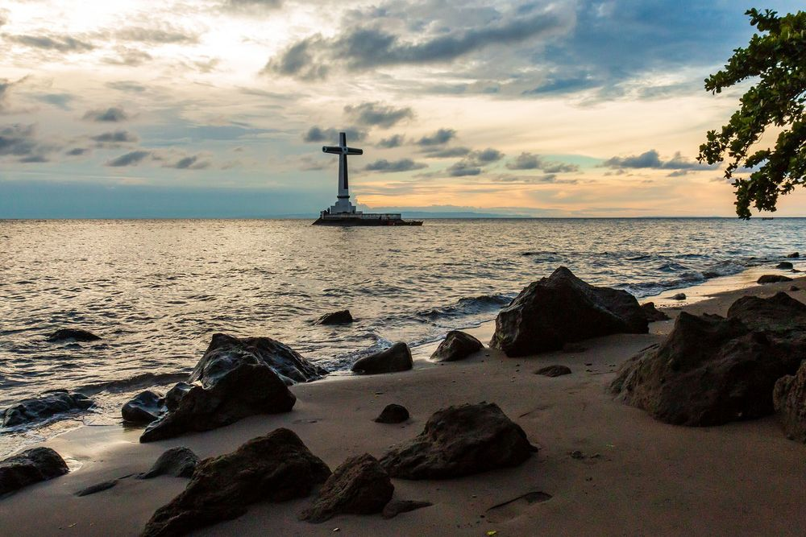
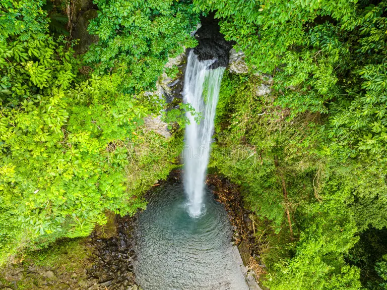
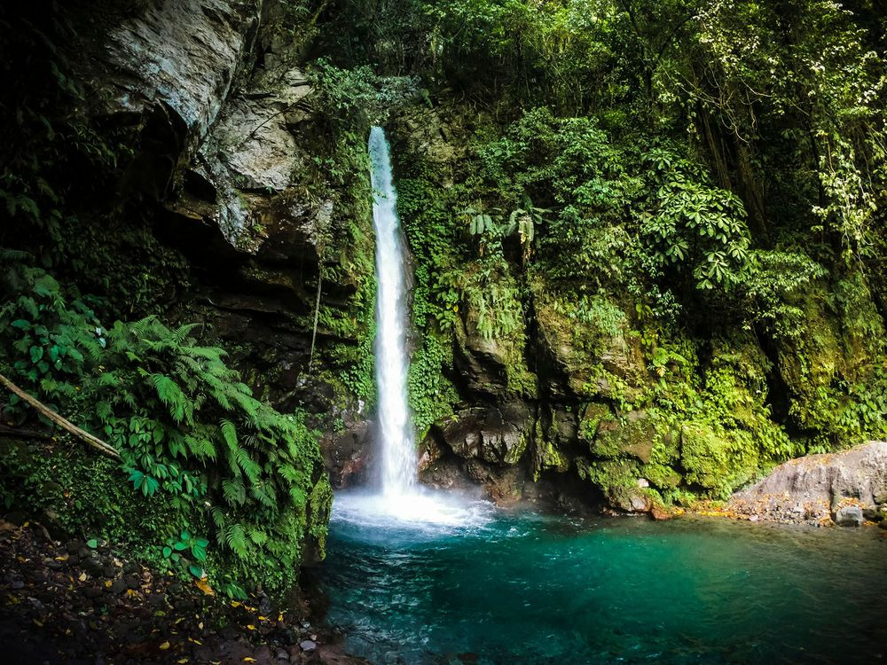
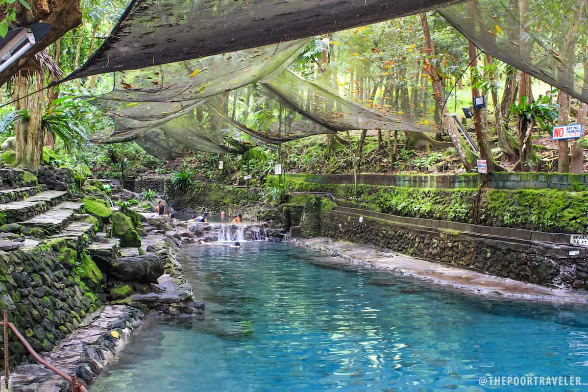
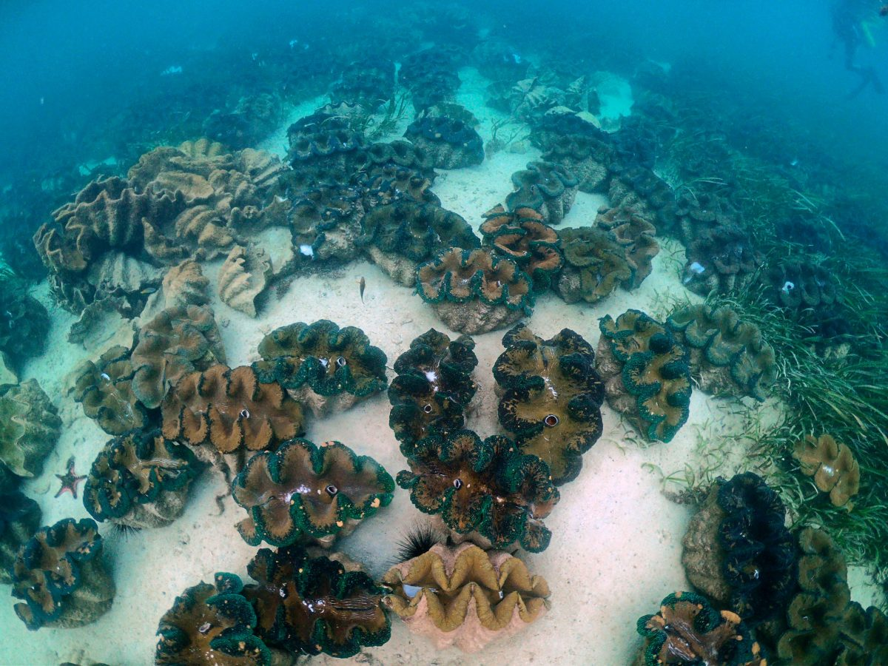

Camiguin Wiki / Attractions & culture
Main article: Camiguin. For geology, see Volcanoes of Camiguin.
Most of Camiguin's best-known sights come from its volcanic past: springs warmed by Hibok-Hibok, waterfalls on the slopes of Mount Timpoong, and a cemetery that sank in 1871. The island also keeps three National Cultural Treasures and a large set of heritage houses.[1]
Guide by topic
Pick a topic below. On a phone, tap a card to flip it; on a computer, hover over it.
 Flip
FlipWhite Island
Sandbar off Mambajao
White Island
A white sandbar about 5 km west of Mambajao, reached by boat from Agoho. Hibok-Hibok and Mount Vulcan rise in the view behind it.[1]

FlipSunken Cemetery
Catarman, 1871
Sunken Cemetery
Part of old Catarman's cemetery sank below sea level when Mount Vulcan formed. A large cross has marked the spot since 1982. It is a National Cultural Treasure.[1]

FlipKatibawasan Falls
76 m waterfall
Katibawasan Falls
About 5 km southeast of Mambajao, the falls drop 76 m into a pool ringed by orchids and ferns. It is a starting point for climbs up Mount Timpoong.[1]

FlipTuasan Falls
20 m, near Catarman
Tuasan Falls
A 20 m waterfall about 6 km northeast of Catarman with a deep, clear pool. A road built between 2012 and 2014 now runs right up to it.[1]

FlipArdent Hot Spring
Foot of Hibok-Hibok
Ardent Hibok-Hibok Hot Spring
Mineral pools at the base of Hibok-Hibok, with steam rising from water heated by the volcano. Tangub Hot Spring, near the Sunken Cemetery, is partly under the sea.[1]

FlipGiant Clams
Marine sanctuary
Giant Clam Sanctuary
Set up by the Kabila Giant Clam Conservation and Ocean Nursery. Seven of the nine giant clam species can be found there, along with many corals.[1]
Mantigue Island, a second islet off the east coast, is reached from Mahinog.[1]
- National Cultural Treasure
Sunken Cemetery of Catarman
Sank during the formation of Mount Vulcan from 1871 to 1875.[1]
- National Cultural Treasure
Old Bonbon Church ruins
Also called Gui-ob Church. Only the walls and bell tower survived the eruption.[1]
- National Cultural Treasure
Guinsiliban watchtower
A Spanish-era tower used to watch for Moro pirates.[1]
- Important Cultural Property
Santo Rosario Church, Sagay
Built in 1882; its façade is a protected cultural property.[1]
- Important Cultural Property
Old Mambajao Fountain and Municipal Building
A Spanish-era fountain in the town rotunda and a well-preserved government building.[1]
- Important Cultural Property
14 ancestral houses
Spanish and American-period homes, including the Borromeo, Neri and Corrales houses.[1]
- October
Lanzones Festival
A week-long celebration of the lanzones fruit in the third week of October. Camiguin's lanzones are known as the sweetest, thanks to the volcanic soil.[1]
- Holy Week
Panaad
During Lent, devotees walk the island's circumferential road on foot. About 30,000 devotees and visitors took part in 2016.[8]
Endemic wildlife
At least six vertebrates are believed to live only on Camiguin, most of them in the forests of the natural monument.[1]
| Common name | Scientific name | Group |
|---|---|---|
| Camiguin hanging parrot | Loriculus camiguinensis | Bird |
| Camiguin hawk-owl | Ninox leventisi | Bird |
| Camiguin bulbul | Hypsipetes catarmanensis | Bird |
| Camiguin forest mouse | Apomys camiguinensis | Mammal |
| Camiguin forest rat | Bullimus gamay | Mammal |
| Camiguin narrow-mouthed frog | Oreophryne nana | Amphibian |
Getting there
| Route | How | Notes |
|---|---|---|
| Cebu → Camiguin Airport | Flight | Cebu Pacific flies from Mactan–Cebu International Airport |
| Balingoan → Benoni port | Ferry | Just over an hour; Balingoan is about two hours by bus from Cagayan de Oro |
| Jagna, Bohol → Balbagon port | RoRo ferry | Daily Super Shuttle Roro service |